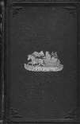

Buffalo, New York
1869-1871
"And yet those far-away homes looked so seductive, they were so remote from the troubled
world, they dozed in such an atmosphere of peace and dreams." Mark Twain, A Tramp Abroad
472 Delaware Avenue
picture courtesy of Mark Twain
"...our
home--which is the daintiest,
& the most exquisite & enchanting that can be found in all
America--&
the longer we know it the more fascinating it grows & the firmer the hold it fastens upon each fettered sense.
It is perfect. Perfect in all its dimentions, proportions & appointments. It is filled with that nameless grace which
faultless harmony gives. The colors are all rich, & all beautiful, & all blended & interchanged & interwoven without
a single marring discord. Our home is a ceaseless, unsurfeiting feast for the eye & the soul, & the whole being. It is a
constant delight. It is a poem, it is music--& it speaks & it sings to us all the day long." letter to Olivia Lewis Langdon,
2.20.1870, Buffalo, NY, as quoted in Mark Twain's Letters, Vol. 4
the longer we know it the more fascinating it grows & the firmer the hold it fastens upon each fettered sense.
It is perfect. Perfect in all its dimentions, proportions & appointments. It is filled with that nameless grace which
faultless harmony gives. The colors are all rich, & all beautiful, & all blended & interchanged & interwoven without
a single marring discord. Our home is a ceaseless, unsurfeiting feast for the eye & the soul, & the whole being. It is a
constant delight. It is a poem, it is music--& it speaks & it sings to us all the day long." letter to Olivia Lewis Langdon,
2.20.1870, Buffalo, NY, as quoted in Mark Twain's Letters, Vol. 4

Back to Elmira | On to Hartford